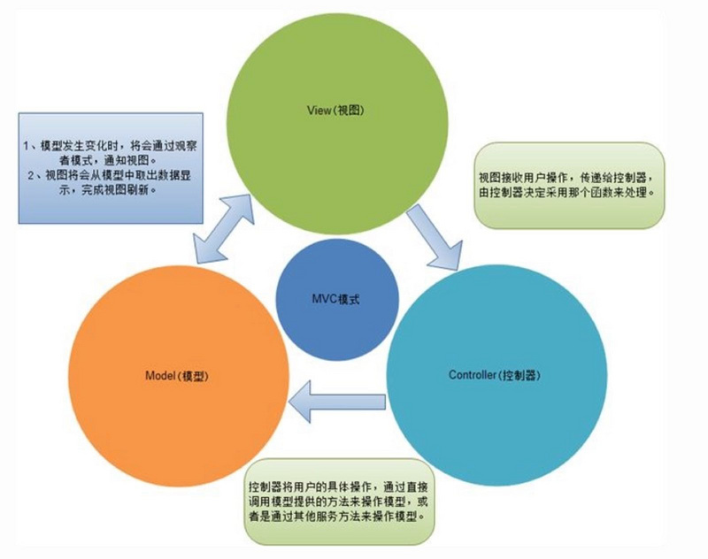
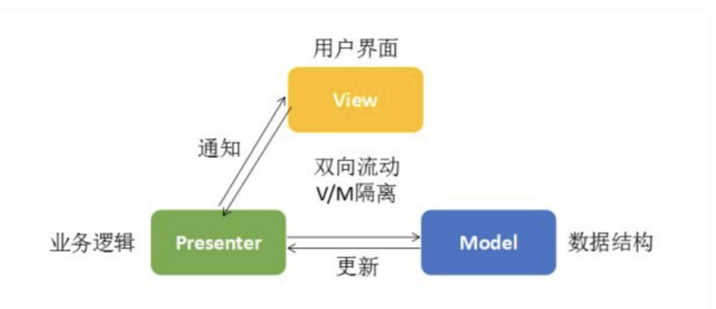
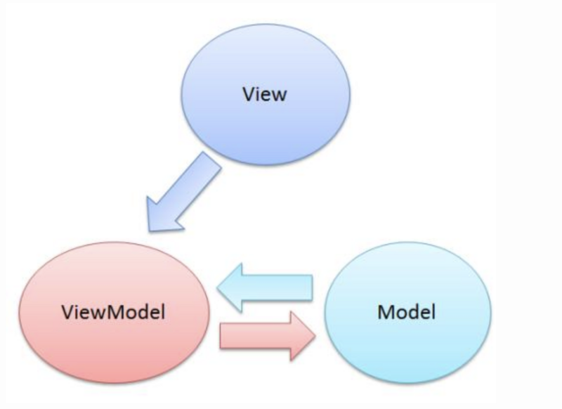
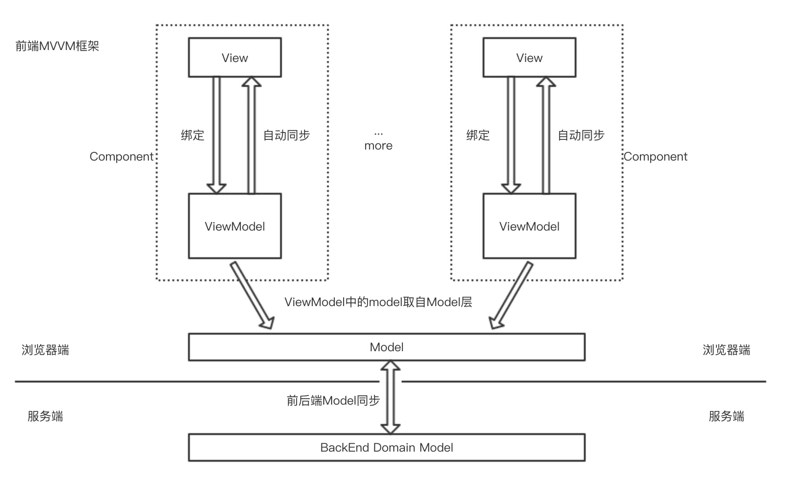

# mvvm 框架介绍
# 前言
三个非常重要的架构模式
- MVC（Model(模型)-View(视图)-Controller(控制器)）
- MVP（Model(模型)-View(视图)-Presenter(中介者)）
- MVVM（Model(模型)-View(视图)-ViewModel(视图模型)）
# 内容
# 一、MVC 模式
MVC 是一个架构设计模式，它通过分离关注点的方式支持改进应用组织方式。它促成了业务数据(Models)从用户面(Views)中分离出来，还有第三个组成部分(Controllers)负责管理传统意义上的业务逻辑和用户输入。

# 1.1 Models
Models 管理一个业务应的数据。它们既与用户界面无关也与表现层无关，相反的它们代表一个业务应用所需要的形式唯一的数据。当一个 Model 改变时(比如当它被更新时)，它通常会通知它的观察者(比如我们很快会介绍 views)一个改变已经发生了，以便观察者采取相应的反应。
# 1.2 Views
视图是模型的可视化表示，提供了一个当前状态的经过过滤的视图。JavaScript 的视图是关于构建和操作 DOM 元素的。
一个视图通常是模型的观察者，当模型改变的时候，视图得到通知，因此使得视图可以更新自身。
# 1.3 Controller
控制器是模型和视图之间的中介，典型的职责是当用户操作视图的时候同步更新模型。
# 1.4 MVC 模式的优势
- 有利于对应用程序中功能进行更加简单的模块化。
- 整体的维护更加便利，控制器修改数据，数据驱动视图。
- 模型与视图解耦，编写单元测试更方便。
- 底层模型和控制器的代码解耦，可复用。
- 分离应用程序的体积和角色，允许负责核心逻辑的开发者和工作于用户界面的开发者同时进行工作。
# 二、MVP 模式
模型-视图-展示器(MVP)是 MVC 设计模式的一个衍生模式，它专注于提升展现逻辑。

# 2.1 Presenter
MVP 中的 P 代表展示器。它是一个包含视图的用户界而逻辑的组件。不像 MVC，来自视图的调用被委派给了控制器，它是从视图中解耦出来的，并且转而通过一个接口来同它进行对话。
在 MVP 中，P 观察着模型并且当模型发生改变的时候对视图进行更新（被动视图）。P 切实的将模型绑定到了视图，这一责任在 MVC 中被控制器提前持有了。
# MVP 模式的优劣
相较于 MVC 模式，MVP 的好处在于：
- 增强应用的可测试性
- 更加干净的隔离视图和模型
劣势在于：
- 缺乏数据绑定支持
# 三、MVVM 是什么?
MVVM(Model View ViewModel)是一种基于 MVC 和 MVP 的架构模式，它试图将用户界面（UI）从业务逻辑和行为中更加清晰地分离出来。为了这个目的，很多例子使用声明变量绑定来把 View 层的工作从其他层分离出来。
简意图：

复杂图：

# 3.1 ViewModel
ViewModel 层：把 View 需要的层数据暴露，并对 View 层的数据绑定绑定声明、指令声明、事件绑定声明负责，也就是处理 View 层的具体业务逻辑。ViewModel 底层会做好绑定属性的监听。当 ViewModel 中数据变化，View 层会得到更新；而当 View 中声明了数据的双向绑定（通常是表单元素），框架也会监听 View 层（表单）值的变化。一旦值变化，View 层绑定的 ViewModel 中的数据也会得到自动更新。
# 3.2 MVVM 模式优劣
优点：
- 分享视图(View)和模型(Model，降低代码耦合，提高视图或者逻辑的重用性：比如视图(View)可以独立于 Model 变化和修改，一个 ViewModel 可以绑定不同的“View”上，当 View 变化的时候 Model 不可以不变，当 Model 变化的时候 View 也可以不变。你可以把一些视图逻辑放在一个 ViewModel 里面，让很多 view 征用这段视图逻辑
- 提高可测试性：ViewModel 的存在可以帮助开发者更好地编写测试代码
- 自动更新 dom：利用双向绑定，数据更新后视图自动更新，让开发者从繁琐的手动 dom 中解放
缺点：
- Bug 很难被调试：因为使用双向绑定的模式，当你看到界面异常了，有可能是你 View 的代码有 Bug，也可能是 Model 的代码有问题。数据绑定使得一个位置的 Bug 被快速传递到别的位置，
- 一个大的模块中 Model 也会很大，虽然使用方便了也很容易保证了数据的一致性，当时长期持有，有释放内存就千万了花费更多的内存
- 对于大型的图形应用程序，视图状态较多，ViewModel 的构建和维护的成本都会比较高。
# 参考资料
- 你对 MVVM 的理解?
- 看完这篇关于 MVVM 的文章，面试通过率提升了 80%
- MVC、MVP 和 MVVM 对比笔记
- 不好意思！耽误你的十分钟，让 MVVM 原理还给你
- mvvm 与 mvc
- 基于 Vue 实现一个简易 MVVM
- 《现代化前端技术解析》
# 联系作者
平凡世界，贵在坚持。

← url 模块 jquery 源码分析 →